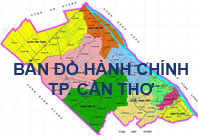

Thủ tướng yêu cầu làm rõ việc Chủ tịch tỉnh Bắc Ninh bị đe dọa
Ngày 16/3, Văn phòng Chính phủ có văn bản truyền đạt chỉ đạo của Thủ tướng Nguyễn Xuân Phúc về đề nghị của UBND Bắc Ninh tiếp tục dừng dự án nạo vét, khơi thông luồng đường thủy nội địa, kết hợp tận thu sản phẩm trên sông Cầu.
Thủ tướng yêu cầu Bộ Công an khẩn trương xác minh việc các đối tượng đứng sau "bảo kê", đe dọa cán bộ, lãnh đạo sở ngành và Chủ tịch tỉnh Bắc Ninh; báo cáo kết quả lên Thủ tướng trong tháng 3.
Bộ trưởng Giao thông Vận tải có trách nhiệm báo cáo Thủ tướng trước ngày 20/3 về việc thực hiện dự án nạo vét luồng đường thủy nội địa quốc gia kết hợp tận thu sản phẩm trên sông Cầu.

Trước đó ngày 9/3, Phó chủ tịch UBND tỉnh Bắc Ninh Nguyễn Hữu Thành có văn bản gửi Thủ tướng; Bộ trưởng Giao thông đề nghị tiếp tục dừng dự án nạo vét, khơi thông luồng đường thủy nội địa kết hợp tận thu sản phẩm trên sông Cầu.
Tỉnh Bắc Ninh cũng đề nghị Thủ tướng chỉ đạo Bộ Công an điều tra việc "các cá nhân từ Trung ương đến địa phương đứng sau bảo kê, đe dọa" cán bộ chuyên môn, lãnh đạo sở, ngành và Chủ tịch tỉnh Bắc Ninh làm sự việc ngày càng trở nên nghiêm trọng.